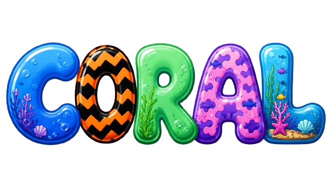

Warming seas are already pushing coral past its limit. Sunscreen that rinses off in the water adds another stress it doesn't need — here's what's happening, and what actually helps.
Coral gets its color and most of its food from algae living in its tissue. When water gets too warm, the coral stresses out and expels the algae — leaving behind a bone-white skeleton. That's bleaching. The coral isn't dead yet, but without its algae, it's starving.
If temperatures drop back down quickly, coral can recover. If the heat lingers — which is happening more often as the oceans warm — the coral dies, and the reef structure it built over centuries goes with it.
Share of global reef area exposed to bleaching-level heat stress, by event. The gap between events keeps shrinking — reefs now have less time to recover.
A lot of divers and snorkelers reapply sunscreen right before getting in the water — but a large share of what's on your skin washes off in the first twenty minutes of a swim. Two common UV filters, oxybenzone and octinoxate, are especially harmful once they're in the water.
Pop the rising bubbles before they float away. Leave the suns alone — click too many and the reef overheats.
Good bubble — click it Sun — leave it alone
You don't have to give up sun protection — you just need it to stay on you instead of ending up in the water.
Choose mineral sunscreens using non-nano zinc oxide or titanium dioxide, and skip oxybenzone and octinoxate.
A rash guard, wetsuit, or long-sleeve swim shirt protects more skin than sunscreen ever will — and nothing washes off it.
Put sunscreen on 20–30 minutes before you get in the water and let it fully absorb, rather than reapplying dockside.
Many dive shops now require or sell reef-safe sunscreen. Ask before you book, and follow their briefing.
Reefs took thousands of years to build. The choices made at the surface — what's in the water, and how warm it's getting — decide whether they're still here for the next generation of divers.